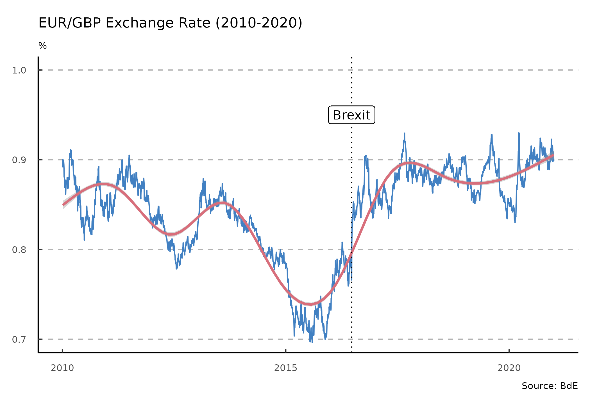
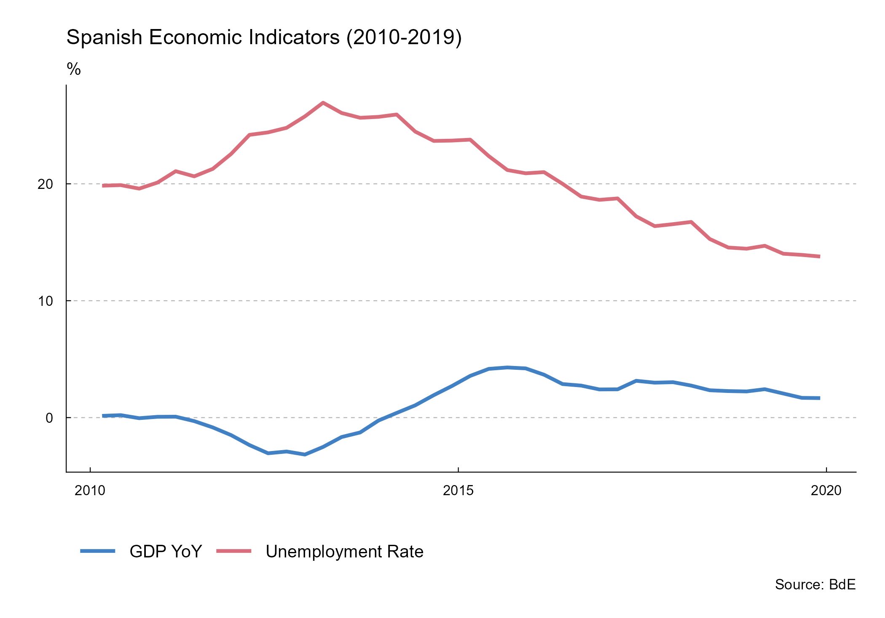

tidyBdE is an API package that helps to retrieve data from Banco de España. The data is returned as a tibble and the package tries to guess the format of every time-series (dates, characters and numbers).
Installation
Install tidyBdE from CRAN:
install.packages("tidyBdE")You can install the developing version of tidyBdE with:
remotes::install_github("ropenspain/tidyBdE")Alternatively, you can install the developing version of tidyBdE using the r-universe:
# Install tidyBdE in R:
install.packages("tidyBdE", repos = c(
"https://ropenspain.r-universe.dev",
"https://cloud.r-project.org"
))Examples
Banco de España (BdE) provides several time-series, either produced by the institution itself or compiled for another sources, as Eurostat or INE.
The basic entry point for searching time-series are the catalogs (indexes) of information. You can search any series by name:
library(tidyBdE)
# Load tidyverse for better handling
library(ggplot2)
library(dplyr)
library(tidyr)
# Search GBP on "TC" (exchange rate) catalog
XR_GBP <- bde_catalog_search("GBP", catalog = "TC")
XR_GBP %>%
select(Numero_secuencial, Descripcion_de_la_serie) %>%
# To table on document
knitr::kable()| Numero_secuencial | Descripcion_de_la_serie |
|---|---|
| 573214 | Tipo de cambio. Libras esterlinas por euro (GBP/EUR).Datos diarios |
Note that BdE files are only provided in Spanish, for the time being, the organism is working on the English version. By now, search terms should be provided in Spanish in order to get search results.
After we have found our series, we can load the series for the GBP/EUR exchange rate using the sequential number reference (Numero_Secuencial) as:
seq_number <- XR_GBP %>%
# First record
slice(1) %>%
# Get id
select(Numero_secuencial) %>%
# Convert to num
as.double()
# Extract series
time_series <- bde_series_load(seq_number, series_label = "EUR_GBP_XR") %>%
filter(Date >= "2010-01-01" & Date <= "2020-12-31") %>%
drop_na()Plots
The package also provides a custom ggplot2 theme based on the publications of BdE:
ggplot(time_series, aes(x = Date, y = EUR_GBP_XR)) +
geom_line(colour = bde_tidy_palettes(n = 1)) +
geom_smooth(method = "gam", colour = bde_tidy_palettes(n = 2)[2]) +
labs(
title = "EUR/GBP Exchange Rate (2010-2020)",
subtitle = "%",
caption = "Source: BdE"
) +
geom_vline(
xintercept = as.Date("2016-06-23"),
linetype = "dotted"
) +
geom_label(aes(
x = as.Date("2016-06-23"),
y = .95,
label = "Brexit"
)) +
coord_cartesian(ylim = c(0.7, 1)) +
theme_tidybde()
The package provides also several “shortcut” functions for a selection of the most relevant macroeconomic series, so there is no need to look for them in advance:
# Data in "long" format
plotseries <- bde_ind_gdp_var("GDP YoY", out_format = "long") %>%
bind_rows(
bde_ind_unemployment_rate("Unemployment Rate", out_format = "long")
) %>%
drop_na() %>%
filter(Date >= "2010-01-01" & Date <= "2019-12-31")
ggplot(plotseries, aes(x = Date, y = serie_value)) +
geom_line(aes(color = serie_name), linewidth = 1) +
labs(
title = "Spanish Economic Indicators (2010-2019)",
subtitle = "%",
caption = "Source: BdE"
) +
theme_tidybde() +
scale_color_bde_d(palette = "bde_vivid_pal") # Custom palette on the package
Palettes
Two custom palettes, based on the used by BdE on some publications are available.
Those palettes can be applied to a ggplot2 using some custom utils included on the package (see help("scale_color_bde_d", package = "tidyBdE")).
A note on caching
You can use tidyBdE to create your own local repository at a given local directory passing the following option:
options(bde_cache_dir = "./path/to/location")When this option is set, tidyBdE would look for the cached file on the bde_cache_dir directory and it will load it, speeding up the process.
It is possible to update the data (i.e. after every monthly or quarterly data release) with the following commands:
bde_catalog_update()
# On most of the functions using the option update_cache = TRUE
bde_series_load("SOME ID", update_cache = TRUE)Citation
H. Herrero D (2025). tidyBdE: Download Data from Bank of Spain. doi:10.32614/CRAN.package.tidyBdE, https://ropenspain.github.io/tidyBdE/.
A BibTeX entry for LaTeX users is
@Manual{R-tidyBdE,
title = {{tidyBdE}: Download Data from Bank of Spain},
doi = {10.32614/CRAN.package.tidyBdE},
author = {Diego {H. Herrero}},
year = {2025},
version = {0.3.8},
url = {https://ropenspain.github.io/tidyBdE/},
abstract = {Tools to download data series from Banco de España (BdE) on tibble format. Banco de España is the national central bank and, within the framework of the Single Supervisory Mechanism (SSM), the supervisor of the Spanish banking system along with the European Central Bank. This package is in no way sponsored endorsed or administered by Banco de España.},
}Contributors
All contributions to this project are gratefully acknowledged using the allcontributors package following the allcontributors specification. Contributions of any kind are welcome!
Code
 dieghernan |
Issues
 coforfe |